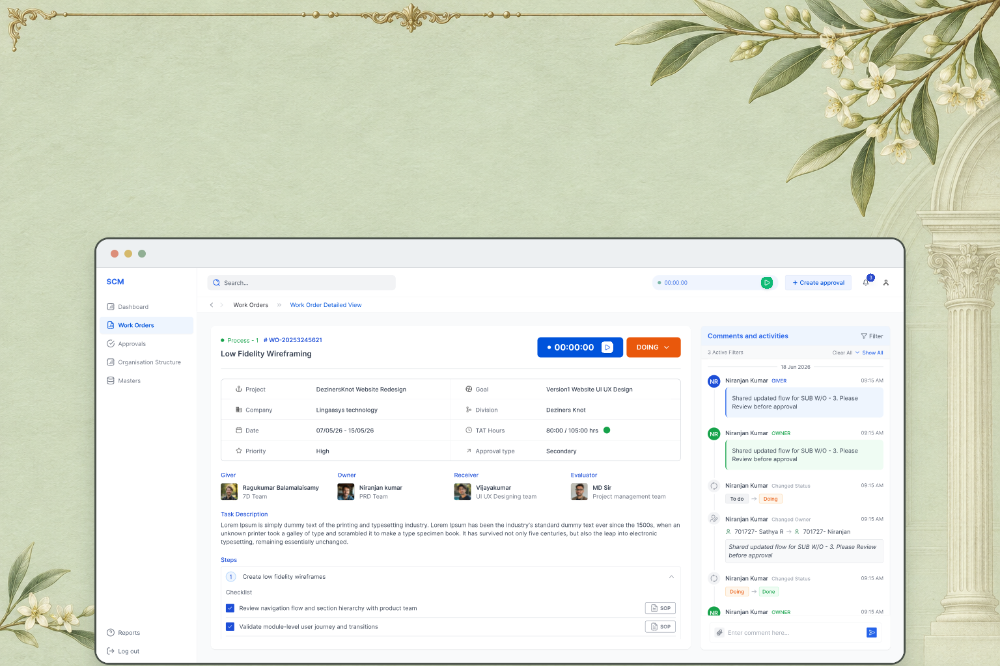
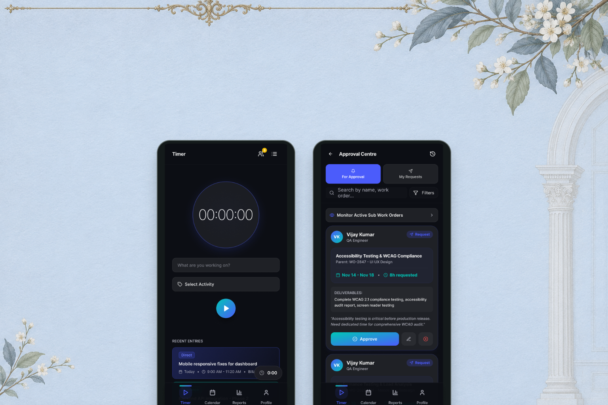
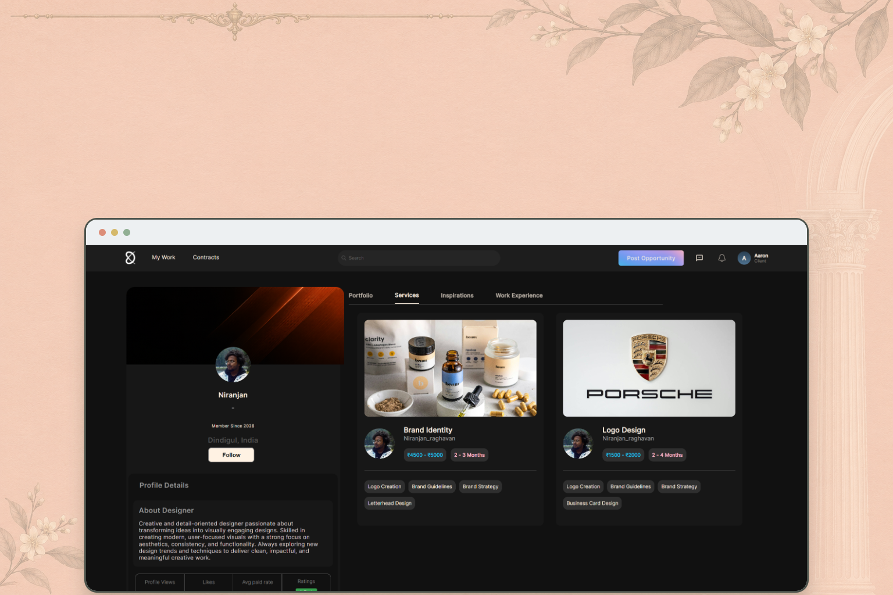
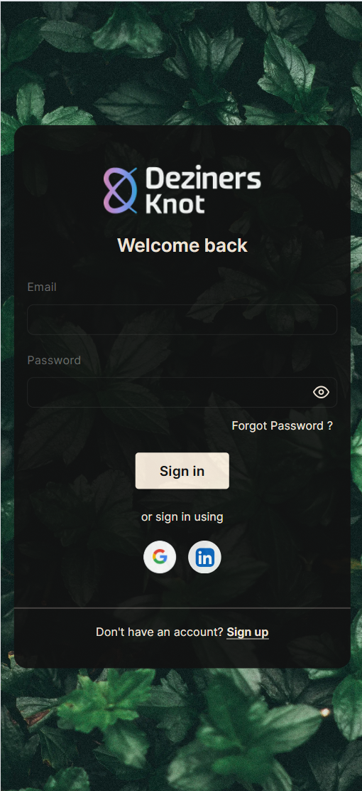

01 / ENTERPRISE WORKFLOWS
Explore case study The Process
Connecting organisations, goals, workflows and execution.

I design end-to-end experiences that bring people, processes and product decisions together.
Selected work
Real product problems, design decisions and the thinking behind them.
Connecting organisations, goals, workflows and execution.

Delegation, time capture and review in one work trail.

Clearer agreements, payments and marketplace operations.

02 / HOW I WORK
A simple, practical approach I follow across product work.
CONTEXT / USERS / GOALS
IDEAS / TRADE-OFFS / FLOWS
PROTOTYPE / TEST / ITERATE
I studied commerce, and my path to product design wasn't a straight line. While supporting my family and helping plan our home, I became fascinated by how spaces, systems and decisions shape people's everyday experiences.
That curiosity eventually led me to UI/UX design. Today, I work at the intersection of user needs, business thinking and connected digital workflows.
Selected work
From request to execution.

Selected work
Designing decisions between two parties.

About me
My journey began in commerce, where I built a foundation in business and systems. That curiosity led me to design, where I combine analytical thinking, problem solving, and creativity to build useful products for real people.
Résumé overview
Product designer with a foundation in commerce, business analysis, and systems thinking.
Contact
I’m looking to join a product team where I can design, simplify, and scale meaningful experiences.